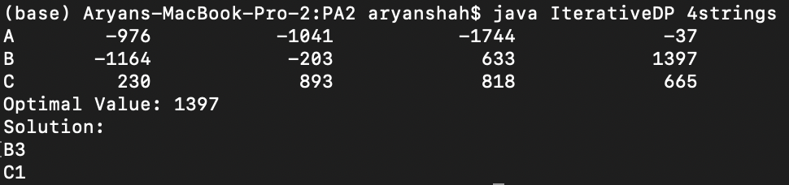

Video Segmentation
A dynamic programming algorithm that takes performs video segmentation for feeds from 3 cameras based on a deterministic black-box Quality function. Each frame in a camera's video feed is represented as a randomized string of length 80.
Logic
The program defines OPT[k, i] to denote the optimal value of segmenting frames 0 to i assuming that the last clip is from Camera k. The following recurrence is then used to solve the problem

Breakdown of test files
The test files in the sample-tests directory are textual files of the form <prefix><camera-name>.txt. Files with the same prefix will be parsed by the program and considered for segmentation.
- For example, 3stringsA.txt, 3stringsB.txt, and 3stringsC.txt are textual files with 3 frames of video, from cameras A, B, and C, respectively.
Each frame of video is represented as a randomized string of length 80.
Breakdown of output
The output of the program consists of three sections.
The first section is the 2D DP table the program computes in O(n^2). Each row is for a Camera, and each column is for a frame of video.
- For instance, DP(A, 3) has the value of the maximized quality(as provided by the black-box function) possible for the first 3 frames given Camera A is used as the last segment.
The second section provides the maximum quality possible given the cameras' feeds.
The third section provides the segmentation solution, where each line is of the form <camera-name><last-frame>
- For instance, solution B3, A1 implies that the optimal solution uses frames 0 and 1 from camera A and frames 2 and 3 from camera B.
Acknowledgments
- Kevin Gold - Sample Tests and
BlackBox.java
BlackBox.java